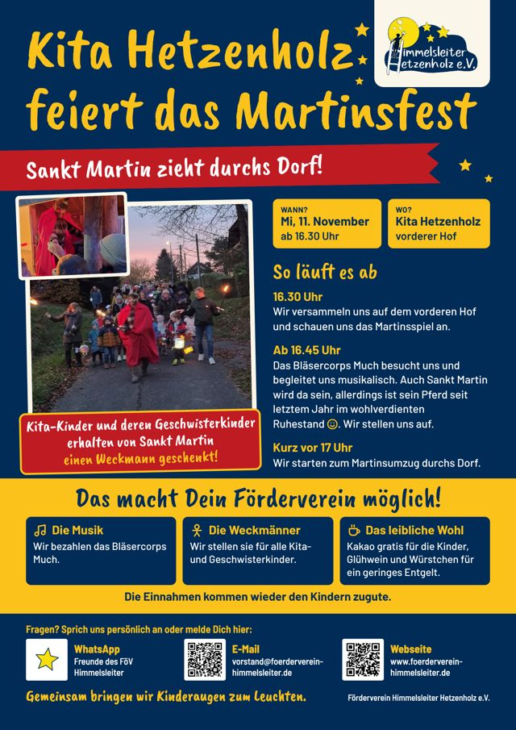

Sankt-Martinsfest
Mi, 11. November 2026ab 16.30 Uhr
Kita Hetzenholzvorderer Hof
Nach dem Martinsspiel begleitet uns der Bläsercorps Much beim Umzug durchs Dorf. Alle Kita- und Geschwisterkinder bekommen von Sankt Martin einen Weckmann.
Der Förderverein bezahlt die Musik und die Weckmänner. Kakao gibt es gratis für die Kinder, Glühwein und Würstchen für ein geringes Entgelt.